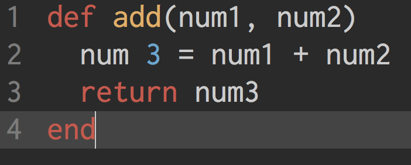
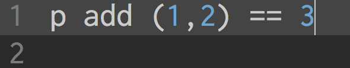
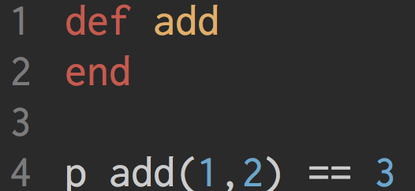
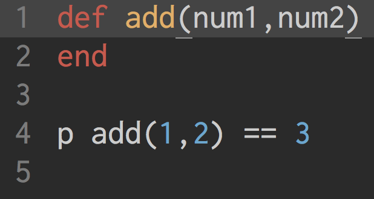
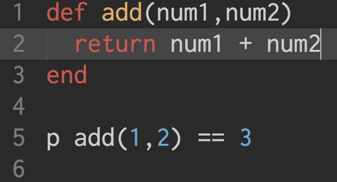

We want you to fail.
How often do you hear those words from someone you like? Probably about never.
But that's the idea of Test-Driven Development. To look for things that fail, and then to go back and fix them, so that they no longer fail. Often it involves writing the tests that you want to fail. But it can be as simple as calling an object that doesn't really exist. Trying to reference a variable that hasn't been declared. Invoking a method that doesn't yet exist.
Let's say that I'm trying to build a calculator. A simple enough program. If I were to just start, I'd dig right in, and probably end up with something that looks a little like this -
And when I want to use said method, I'd just call add and pass it the arguments that it wants.
But if I wanted to go about making my calculator with TDD, I'd start with a test first. I'd start with this.
Which, will of course raise a multitude of errors for various reasons. The first that you will encounter will be the "Undefinded Method" error. Okay, so lets fix it and make a method. The code now looks like this -
Which will, when run, of course return with an error. This time we get "Wrong Number of Arguments (2 for 0)" Which makes sense. We've defined the method, but we haven't told it to accept anything. So we can fix that -
Which, just returns "false". So now at least Ruby doens't have a problem with what's going on, but the logic isn't coming through. It should output "true" if the test works the right way. So, we once again amend the code -
And sure enough, it now returns true..
Rinse and repeat.